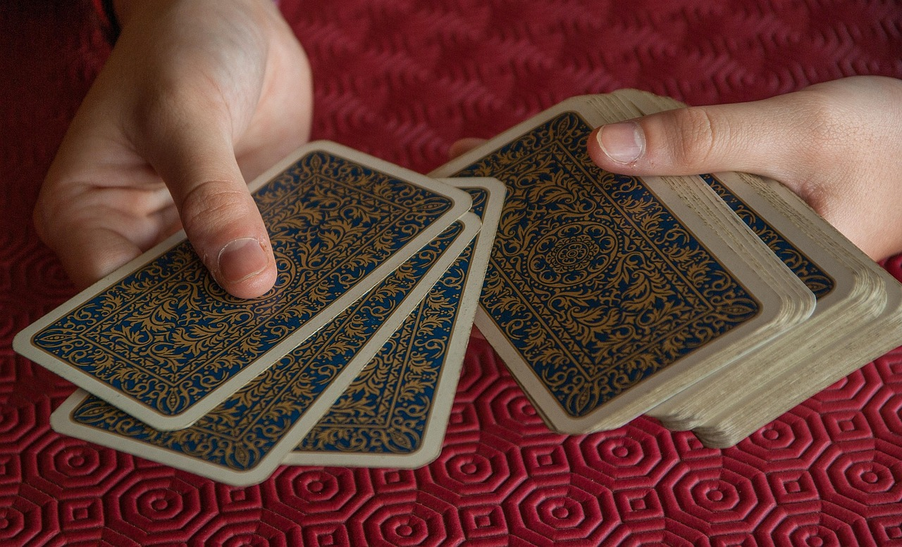

Дівам — гармонія, Рибам — сцілення. Розклад таро на суботу 24.05.25 знакам Зодіаку
Virgos — harmony, Pisces — healing. Tarot reading for Friday 24.05.25 for the Zodiac signs
На 24 травня 2025 року було здійснено глибокий розклад карт Таро для всіх знаків зодіаку. Цей день обіцяє бути особливим за своєю енергетикою — він відкриває можливості для внутрішніх трансформацій, переосмислення подій, а також пошуку відповідей на важливі запитання.
Карти Таро говорять про необхідність зосередження на собі. Те, що здавалося другорядним, сьогодні може вийти на перший план. Деякі з нас відчують сильну потребу в емоційному очищенні, інші — захочуть змін у повсякденному житті. Це день, коли інтуїція посилюється, і саме вона стане найкращим порадником.
Символи, що відкрились у розкладі, вказують на період, коли слід звернути увагу на баланс між внутрішнім і зовнішнім. Важливо не тільки діяти, а й прислуховуватися до власного стану. Багато хто відчує потребу в паузі, у спокої, у часі на себе. Не варто ігнорувати ці сигнали — навпаки, саме в тиші можуть народитися важливі усвідомлення.
Цього дня також можливі знакові зустрічі, нові ідеї, які змінять підхід до життя або справ. Карти натякають: усе, що трапляється зараз, має сенс. Навіть якщо події виглядають незрозумілими — згодом стане ясно, навіщо вони були потрібні.
Всесвіт сьогодні промовляє через мову символів, снів, відчуттів. Ті, хто налаштований чути, отримає підказку. Ті, хто довіряє — знайде шлях. І хоч цей день може бути непростим, він здатен стати початком важливих змін.
google.com, pub-7491595719235630, DIRECT, f08c47fec0942fa0ОВЕН — П’ятірка Мечів
Ця карта вказує на конфлікти, суперечки або ситуації, де бажання перемогти переважає над моральними принципами.
П’ятірка Мечів часто символізує перемогу, яка дістається занадто дорогою ціною. Це карта постконфліктного періоду, коли стає зрозуміло, що перемога не завжди означає задоволення. Вона також може вказувати на маніпуляції або приховану агресію з боку інших.
ТЕЛЕЦЬ — Диявол
Диявол говорить про зв’язки, які нас утримують — це можуть бути шкідливі звички, токсичні стосунки або страхи.
Це архетип матеріального, залежностей та спокус. У традиційному Таро Диявол уособлює ситуації, в яких людина добровільно залишає себе в полоні, втрачаючи контроль. Карта вказує на необхідність усвідомлення тіньових сторін особистості.
БЛИЗНЮКИ — Сімка Кубків
Це карта мрій, фантазій, спокус і хибних ілюзій. Перед тобою відкривається безліч можливостей.
Сімка Кубків зображає вибір із багатьох варіантів, кожен із яких несе як шанс, так і ризик. Вона часто говорить про стан, коли важко прийняти рішення через надлишок варіантів або ілюзій.
РАК — Четвірка Мечів
Час зупинки, глибокого внутрішнього відпочинку та рефлексії. Твоєму тілу й душі потрібна пауза.
Четвірка Мечів символізує відновлення, медитацію, самотність або навіть тимчасову ізоляцію. Це карта енергетичного перезавантаження, що часто випадає після періодів стресу або боротьби.
ЛЕВ — Колісниця
Ти маєш усі ресурси, щоб керувати власною долею. Колісниця говорить про внутрішню дисципліну.
Ця карта уособлює силу волі, контроль і рішучість. Вона асоціюється з тріумфом, швидким розвитком подій, а також здатністю збалансувати протилежні сили, які рухають вперед.
ДІВА — Зірка
Це одна з найсвітліших і найдуховніших карт колоди. Вона говорить про надію, натхнення та глибоке зцілення.
Зірка символізує духовне оновлення, прозріння та гармонію. Часто вона з'являється після періоду випробувань і несе із собою віру в краще майбутнє, підтримку Всесвіту та особистий ріст.
ВАГИ — Вісімка Пентаклів
Ця карта уособлює майстерність, вдосконалення і наполегливу працю. Це час, коли результат прямо залежить від зусиль.
Вісімка Пентаклів асоціюється з процесом навчання, поступового зростання, самовдосконалення та турботи про якість. Вона також говорить про відповідальне ставлення до обраного шляху.
СКОРПІОН — Вежа
Несподівані події можуть змінити звичний уклад життя. Те, що здавалося стабільним, може раптом зруйнуватись.
Вежа — символ різких змін, краху ілюзій та очищення через потрясіння. Її енергія може бути руйнівною, але вона відкриває шлях до істинного, звільнюючи від фальші та обмежень.
СТРІЛЕЦЬ — Дурень
Це карта початку, внутрішньої свободи та віри у життя. Ти стоїш на порозі нової пригоди.
Дурень вказує на спонтанність, відкритість новому досвіду та довіру до Всесвіту. Це символ духовної невинності, готовності до ризику та пошуку свого шляху без страху перед невідомим.
КОЗЕРІГ — Королева Мечів
Це символ інтелекту, чіткості та незалежності. Ти можеш бачити ситуацію ясно, без ілюзій.
Королева Мечів — це архетип справедливості, логіки та аналітичного мислення. Вона часто уособлює людину, яка пройшла через випробування й навчилась відділяти емоції від фактів.
ВОДОЛІЙ — Повішений
Ти перебуваєш у стані паузи, підвішеності або внутрішнього переосмислення. Це не застій.
Повішений вказує на зміну точки зору, жертву заради вищої мети або потребу прийняти ситуацію такою, якою вона є. Це карта внутрішньої трансформації та глибоких інсайтів.
РИБИ — Сонце
Це одна з найсильніших карт щастя, радості та ясності. Сонце приносить тепло у всі сфери твого життя.
Сонце символізує оптимізм, успіх, гармонію та внутрішню впевненість. Вона свідчить про прозорість, відкритість і позитивну енергію, яка сприяє процвітанню.
On May 22, 2025, a deep Tarot card reading was conducted for all zodiac signs. This day promises to be special in its energy — it opens the door for inner transformation, rethinking events, and finding answers to important questions.
The Tarot cards emphasize the need to focus on oneself. What seemed secondary may come to the forefront today. Some of us may feel a strong need for emotional cleansing, others may crave changes in daily life. This is a day when intuition strengthens, becoming your best advisor.
The symbols revealed in the spread indicate a time to pay attention to the balance between inner and outer. It's important not only to act but also to listen to your state of being. Many will feel the need for a pause, peace, and time for themselves. Don't ignore these signals — in silence, important insights may be born.
This day also brings fateful encounters, new ideas that change your approach to life or work. The cards suggest: everything happening now has meaning. Even if events seem unclear — in time, you will understand why they were needed.
The Universe speaks today through symbols, dreams, sensations. Those who are attuned to listen will receive a clue. Those who trust — will find their path. And though the day may be challenging, it can mark the beginning of important changes.
ARIES — Five of Swords
This card points to conflicts, disputes, or situations where the desire to win overrides ethical considerations.
The Five of Swords often represents hollow victories, where success may come at a significant emotional or relational cost. It can indicate manipulation, tension, and lingering hostility, even after the conflict appears resolved.
TAURUS — The Devil
The Devil highlights attachments that bind us — these can be unhealthy habits, toxic relationships, or inner fears.
In tarot symbolism, the Devil represents materialism, addiction, temptation, and illusions of powerlessness. It reflects the shadow aspects of the self and a need to confront the forces that inhibit true freedom.
GEMINI — Seven of Cups
This is the card of dreams, fantasies, temptations, and illusions. Many possibilities lie before you.
The Seven of Cups often appears when the mind is overwhelmed with choices, each offering potential but also illusion. It symbolizes wishful thinking, unrealistic expectations, and the importance of discernment.
CANCER — Four of Swords
A time for stillness, deep inner rest, and reflection. Your body and soul need a pause.
The Four of Swords suggests retreat, meditation, and recovery. It often follows emotional or mental turmoil and represents the need for solitude to regain strength and clarity.
LEO — The Chariot
You have all the resources to take charge of your destiny. The Chariot speaks of inner discipline.
It is a card of determination, ambition, and focused energy. The Chariot symbolizes victory through control, movement forward, and balancing opposing forces to achieve a unified direction.
VIRGO — The Star
One of the most luminous and spiritual cards in the deck. It represents hope, inspiration, and profound healing.
The Star brings renewal, peace, and a connection to the divine. It often follows a period of darkness, offering guidance, insight, and a sense of universal alignment and personal authenticity.
LIBRA — Eight of Pentacles
This card embodies mastery, improvement, and dedicated effort. Results depend directly on your persistence.
The Eight of Pentacles represents hard work, skill-building, and focused attention on a task or craft. It is associated with growth through repetition, self-discipline, and long-term goals.
SCORPIO — The Tower
Unexpected events may disrupt your usual flow. What seemed stable may suddenly collapse.
The Tower signifies upheaval, revelation, and breaking down of illusions. Though its energy can be shocking, it clears the way for transformation and the rebuilding of structures based on truth.
SAGITTARIUS — The Fool
This is the card of beginnings, inner freedom, and trust in life. You stand at the threshold of a new adventure.
The Fool symbolizes innocence, spontaneity, and potential. It marks the start of a journey — physical, emotional, or spiritual — and invites exploration without fear or rigid expectations.
CAPRICORN — Queen of Swords
A symbol of intellect, clarity, and independence. You are able to see situations clearly, without illusion.
The Queen of Swords embodies logic, reason, and experience. She often represents someone who has gained wisdom through hardship and who approaches decisions with fairness and objectivity.
AQUARIUS — The Hanged Man
You are in a state of pause, suspension, or inner reevaluation. This is not stagnation.
The Hanged Man represents a shift in perspective, surrender, and insight gained through letting go. It is a deeply spiritual card that signals transformation through acceptance and stillness.
PISCES — The Sun
One of the most powerful cards of joy, clarity, and happiness. The Sun brings warmth to every area of your life.
The Sun radiates success, abundance, and a sense of purpose. It reflects truth, vitality, and the power of positivity. This card shines a light on the path ahead with confidence and optimism.